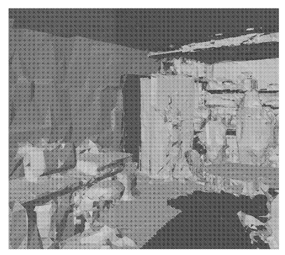
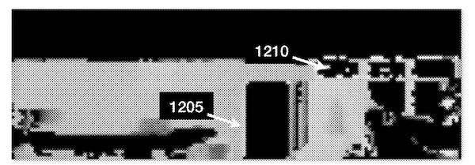

At a previous startup, I invented an Augmented Reality (AR) system for scanning buildings, and automatically extracting floor plans from scans. Recently a few of the patents I wrote were published, and I wanted to share those, with a brief summary.
This describes an augmented reality workflow for capturing a 3D mesh of an environment, and recording points of interest. A key idea is to capture all the user interactions and raw 3D data first. Later in a post-process step, we determine user intent and relative positioning using complete global information.

Once we have a 3D scan of an environment, how do we go about turning this into a 2D floor plan? Floor plans are conceptual, rather than objective, and so are guided by user input. This invention describes both an augmented reality workflow and an algorithm for processing that input. It turns out, doing this perfectly is likely NP-complete, but this proper understanding guides effective heuristics.

It’s important to give feedback to the user during the scanning process. One way we do that is through the augmented reality visualization that shows which parts of a room are captured, and is programmed through shaders. The biggest challenge is to show accurate estimates quickly, despite the scan being incomplete.

Scan measurements contain error, and the real world is imperfect. How can we correct the alignment of complex floor plan shapes with minimal distortion? One answer is to simultaneously move all points of the floor plan in a multi-variable optimization approach.


Along with the shape of the building, we are also interested in the apertures of each room. The polygonal shape tells us where the walls are in 3D. We can then render the portion of the 3D mesh corresponding to each wall, and detect cutouts in the rendered image. This transforms a complex 3D detection problem into a traditional 2D computer vision problem. These 2D detections are then projected back into 3D features on the wall.